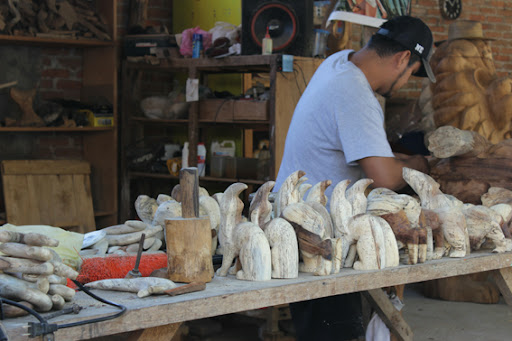
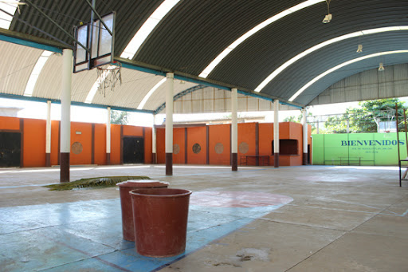

El Municipio de Santa María Huazolotitlán cuenta con una extensión territorial de 322.78 km², a una altitud media de 290 m.s.n.m.
Colinda con los municipios de San Andrés Huaxpaltepec, Santiago Jamiltepec y Santiago Pinotepa Nacional. El clima predominante es
cálido con lluvias en verano.
Santa María Huazolotitlán cuenta con una población total de 10,794 habitantes (INEGI 2012), de los cuales 5,517 son mujeres y 5,277 hombres.
En Santa María Huazolotitlán existe un total de 2,776 viviendas.
Cultura
Posee con una gran riqueza cultural y tradicional, que no se ha proyectado a nivel estatal y nacional. Por ello es importante que la actual
administración municipal defina acciones que promuevan de manera eficaz el desarrollo cultural del pueblo, con el propósito de fomentar en los
ciudadanos la importancia de preservar las tradiciones, raíces y difundir el patrimonio cultural, tangible e intangible del Municipio.

Deporte
Las actividades deportivas son importantes para prevenir la salud del humano y las adicciones. Más relevantes resultan para la niñez y la
juventud, dado que les permite desarrollar todas sus capacidades de manera integral. En tal sentido, el fomento del deporte a través de
infraestructura suficiente y adecuada, torneos e incentivos, debe ser una tarea prioritaria del Municipio.
Dentro de las disciplinas que más se practican en la región están el futbol soccer y el basquetbol, para ello se cuenta con instalaciones
de basquetbol en todas las comunidades y espacios para practicar el futbol, sin embargo, la infraestructura deportiva no es suficiente ni
de la calidad requerida, existe una liga local de futbol soccer y, ocasionalmente cuando son las fiestas patronales, se organizan torneos
relámpagos de las dos disciplinas antes mencionadas.

Comercio
El comercio en el Municipio se dedica fundamentalmente a cubrir la demanda local de bienes y servicios, se compone de tiendas de abarrotes,
refaccionarias, tiendas de ropa y calzado, estéticas, fondas, restaurantes, papelerías, centros de cómputo, etc., que en general son micro y
pequeños negocios familiares. La presencia de cadenas comerciales regionales o nacionales es nula, las más cercanas se encuentran en Santiago
Pinotepa Nacional.
Artesanías
En Santa María Huazolotitlán se producen artesanías de madera y textiles. El tallado de madera de copal silvestre realizado por artesanos con
herramientas básicas genera diferentes figuras mitológicas o actuales. Las artesanas textiles hacen bordados multicolores en manta, elaboran
huipiles, servilletas y manteles en telar de cintura. Cabe destacar que no existe una organización formal de artesanos en el Municipio, por
lo que sería importante considerar esta posibilidad para proyectar todo su potencial.
Estas artesanías son comercializadas en el mercado de la región a precios bajos que no reditúan lo suficiente a los artesanos. Es importante
rescatar y proyectar esta acti-vidad a los mercados estatal, nacional e internacional, para convertirla en fuente de ingresos importante para
la población dedicada a ella.